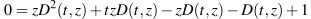

Definition 1.1. A stochastic process is generally defined as any collection of random variables X(t), t ∈T , defined on a common probability space, where T ⊆ℝ. (Hoel, 1972)
That is, a stochastic process is generally any collection of random variables and they are typically used to model non-deterministic systems and phenomena. In our case, and many others, we will study discrete systems and thus T ⊆ℤ. It is important to note that the set of parameters on which our collection of random variables is defined, T , need not be discrete. T will be referred throughout this paper, and many others, as the time. Therefore, t will only take values 0,1,2,… and thus we let T = ℕ∪{0}
Definition 1.2. A state is a certain configuration of a system. A state space is the set of all possible
configurations/states of a system. We will denote  to be the state space of the stochastic process
for which we are interested in. For this paper, the state space is assumed to be discrete and = ℤ.
to be the state space of the stochastic process
for which we are interested in. For this paper, the state space is assumed to be discrete and = ℤ.
Definition 1.3. A random walk is a stochastic process that describes the path that consists of a succession of random steps on some mathematical space.
We will observe the state of our system at times 0,1,2,… and at each of these points in time, the system will have one of the states …,-2,-1,0,1,2,…. Let 0 < p < 1 be the probability that the system ”jumps” from its current state to its current state plus 1. Let q = 1-p be the probability that it ”jump”s from its current state to its current state plus -1. If Sn denotes the state of the system at time n, then
| (1.1) |
and we assume that the direction of each jump is independent of all earlier jumps. Therefore,
| (1.2) |
where S0 is the initial state of the system and X1,X2,… are independent and identically distributed random variables each taking either value -1 or 1 with probabilities ℙ(Xn = 1) = p and ℙ(Xn = -1) = 1-p = q.
Definition 1.4. We call the process S0,S1,… a simple random walk. We call it symmetric if p = q = and asymmetric otherwise.
Theorem 1.5. Let Sn be a simple random walk where S0 = 0. ℙ(Sn = 0) is the probability that Sn is at its starting point at time n. Then
| (1.3) |
where p,q are as previously defined.
Proof. For Sn = 0, where S0 = 0, we need that in the simple random walk Sn = X1 + + Xn, there are equally as many Xi, for i ∈{1,…,n}, that take the value 1 as there are Xi that take the value -1. Thus, the total number of steps is 2m where m is the number of Xi that take the value 1. Since n must be even in order for Sn = 0, the probability that Sn = 0 for an odd number of steps n is ℙ(Sn = 0) = 0.
Suppose now that n is even and take n = 2m where m is the number of Xi that take on the value 1. If 2m is the total number of steps of the simple random walk and we know that exactly m of those 2m steps take on the value of 1, then there are exactly distinct combinations of Xi in the simple random walk where exactly m of them are Xi = 1.
Note that each Xi are identical independent random variables. So, for any one simple random walk of n steps where Sn = 0, the probability that m Xi’s take on the value 1 and m Xi’s take on value -1 is
where i is any i ∈ {1,…,n}. That is, for each simple random walk where Sn = 0, its corresponding probability of occurring is pmqm. Since we showed that there are exactly of these, then our probability that Sn = 0 is
where n = 2m. (Grimmett and Walsh, 2017)
Note that if we assume equiprobability in our simple random walk from Theorem 2.1, if n, then,
where 2n is the enumeration of all paths of length n. This is exactly the result from Theorem 1.5 with parameter p = 1∕2. __
Definition 1.6. We call a random walk recurrent if it revisits the starting point infinitely often with probability one. In other words, if it is bound to revisit the starting position at some point in time. Otherwise, we call a random walk transient. (Grimmett and Walsh, 2017)
Definition 1.7. An absorbing barrier is state of the system in which if the system reaches that state at any time, then the process terminates. The absorption probability is the probability of the random walk reaching an absorbing barrier.
In the following section, we will study a specific scenario involving the definitions 1.6 and 1.7 in regard to simple random walks.
2 Gambler’s Ruin
The gambler’s ruin problem is a statistical scenario centered around conditional probabilities and expected outcomes. The problem was around long before random walks and Markov chains were formally discovered (the earliest known mention of the problem being in 1656. This section will cover a brief introduction to the idea and is not meant to be a rigorous treatment. Rather, it serves to showcase simple random walks themselves. We will pose the key questions behind the gambler’s ruin, develop the basic mathematical framework using what we discussed in Section 1, and go over a brief derivation of the Gambler’s Ruin theorem in lieu of a proof.
Let X1,X2,… be i.i.d. random variables on (Ω,,ℙ) as defined in (1.2). Suppose that a gambler enters a casino with an initial capital of a and has the stubborn strategy of betting until either they achieve their goal c > a or they are broke and they hove no other choice but to leave the casino. There are two main questions we concern ourselves with. (Billingsley, 1995)
Question: What is the probability of ruin? That is, the probability that they go broke.
Question: What is the probability they reach their goal? That is, the probability they increase their capital from a to c.
Let Sn = X1 ++Xn, where S0 = 0. The gambler’s fortune after n plays or steps of the simple random walk is a+Sn. The event
| (2.1) |
represents the success of the gambler after n plays. If n > c-a, then there are more ways than one for the gambler to reach success. If n = c-a, then the gambler must win every play of the game in order to reach success. And if n < c-a, then there aren’t enough plays to reach success in that case and Aa,n = ∅. Additionally,
| (2.2) |
represents the ruin of the gambler after n plays.
If sc(a) denotes the probability of reaching success, then,
| (2.3) |
for 0 < a < c. Note that it splits since each Aa,n is disjoint from one another. Similarly, if s0(a) denotes the probability of ruin, then,
| (2.4) |
c and 0 are both absorbing barriers on Sn. sc(a) is the absorption probability of c. s0(a) is the absorption probability of 0.
From (Billingsley, 1976) we an intuitive argument for a recurrence relation on the absorption probability sc(a). Note that Xi are a sequence of i.i.d. random variables in Sn. So, by independence, the sequence X2,X3,… is probabilistically identical to X1,X2,…. Thus, the chance of success for a gambler with initial fortune a must be the chance of winning the first wager times the chance of success for an initial fortune a+1, plus the chance of losing the first wager times the chance of success for an initial fortune a-1 (this is essentially the partition theorem). Therefore,
| (2.5) |
This is a second order linear homogeneous difference equation subject to boundary conditions sc(0) = 0 and sc(c) = 1. That is, if the gambler’s initial capital is 0 then there is 0 chance of success and if their initial capital is c then there is chance of success is 1. In either case, we wonder what was going through their heads when they walked into the casino with this goal. We can solve (2.5) obtaining,
| (2.6) |
Using boundary conditions, we find that A = and B =  . Thus, after substituting and
simplifying for A and B, we have obtained,
. Thus, after substituting and
simplifying for A and B, we have obtained,
Theorem 2.1. (Gambler’s Ruin) Fix c and let n ≥1 and 0 < a < c. Consider the simple random walk Sn on the {0,1,2,…,c} with absorbing barriers on 0 and c. Then, the probability that the walk is absorbed at c is given by
| (2.7) |
Equiprobable Paths
3 Enumerating Paths
3.1 Lattice Paths
We assume the reader has some familiarity with Lattice paths commonly seen in combinatorics. Recall that the total number of distinct Lattice paths from a point (a,b) to a point (p,q) is
| (3.1) |
We will study ”diagonal” Lattice paths as diagonal steps in the first and fourth quadrants of the Cartesian plane where up corresponds to the step (1,1) and down corresponds to the step (1,-1).
Let u be the letter that denotes a rise, the step (1,1), and d be the letter that denotes a fall, the step (1,-1). Each Lattice path is encoded by a word consisting of letters from the alphabet {u,d}. We denote the lattice word as γ with t number of steps. That is, γ = γ1γ2…γt ∈{u,d}*.
Let t denote the total number of steps. Let m denote the total number of ups, (1,1), and n denote the total number of downs (1,-1). The total number of steps is t = m+n. Then the total number of Lattice paths between any two points is the total number of distinct combinations of u and d in the Lattice path’s corresponding word γ, which contains exactly m u’s and n d’s. This is,
|
|
When given the coordinates that the Lattice path ends at, the difference between the start and end abscissa corresponds to t, since each step contains exactly one horizontal component. The difference between the start and end ordinate tells us the difference between the up steps and down steps.
That is, if we are enumerating all the diagonal Lattice paths from (a,b) to (p,q), then
| (3.2) |
and
| (3.3) |
and thus, the total number of distinct Lattice paths from (a,b) to (p,q) is
| (3.4) |
where t,m,n are as previously defined. What is important about how t,m,n are defined is that if we are given the start and end coordinates, then we can find the number of distinct Lattice paths between them.
Typically it is simpler to just transform the start and end coordinates to where the start coordinate is the origin (0,0).
3.2 Dyck Paths: Definitions and Ideas
A Dyck path is a path in the first quadrant, ℕ∪{0}×ℕ∪{0}, which begins at the origin (0,0) and ends at (2n,0) where n ∈ℕ∪{0}. It consists of steps (1,1) called rises and steps (1,-1) called falls. n denotes the semi-length of the path. The trivial Dyck path is called the empty Dyck path where n = 0. We denote the set of all Dyck paths of semi-length n as Dn. We may refer to Dyck paths of semi-length n as n-Dyck paths.
As seen Section 4.1, we let u be the letter that denotes a rise and d be the letter that denotes a fall. Each Dyck path is encoded by a word consisting of letters from the alphabet {u,d}. That is, for every Dyck path, there is a corresponding word α = α1α2…α2n ∈{u,d}*.
A step of a Dyck path with ordinates, with no distinction in order, k-1 and k (k ≥1) is said to be at level k. A point of a Dyck path with ordinate k is said to be at level k.
A peak is an occurrence of the substring ud, a valley is an occurrence of du. By the level\height of a peak we mean the level of the intersection point of its two steps. There are other specific occurrences that can be studied such as valleys, du, doublerises, uu, and etc.
By a return step we mean a fall at level 1.
If α and β are Dyck paths, then we define
αβ as the concatenation of α and β.
:= uαd as the elevation of α.
(Note that has semi-length of n ≥1 for any Dyck path α)
The set n is defined as
| (3.5) |
If A and B are finite sets of Dyck paths then AB is defined as
| (3.6) |
(Deutsch, 1999)
Example 3.1. Consider a Dyck path of semi-length n. Let α be its corresponding word. Let the substring ud ∈α. Then, we know that ud is a peak within α. Further, suppose we know that u is a rise from ordinate k-1 to k and therefore u is a rise of level k. Then d must be a fall from ordinate k to k-1 and therefore is a fall of level k. From our definition of levels of peaks, it follows that ud is a peak of level k.
3.3 Dyck Paths: Generating Functions
We can enumerate the number of Dyck paths of semi-length n by finding its corresponding generating function, with the variable z encoding the parameter of semi-length, and performing coefficient extraction. In order to do so, we will develop its recurrence relation, solve it, and then deduce the coefficients into a well known sequence of numbers.
Every non-empty Dyck path can be decomposed as α = uβdγ or α = βuγd where α,β,γ are Dyck paths, and β and γ may or may not be empty. This is called first return decomposition. (Deutsch, 1999)
First return decomposition allows us to decompose the set of n-Dyck paths as
| (3.7) |
and
| (3.8) |
for n ≥1. Note that these are disjoint sets. Thus, (4.8) and (4.9) together imply that the cardinality of Dn is the sum,
| (3.9) |
where n ≥1. (Deutsch, 1999)
Denote D(z) as the generating function that counts the number of Dyck paths of semi-length n with z as the variable that codes the semi-length of the Dyck path. Let Pn denote the enumerating polynomial of each zn. This is,
| (3.10) |
since, clearly, the coefficient Pn in this case is |Dn|. Similarly, (z) is the generating function
| (3.11) |
The parameter semi-length is what we refer to as additive. If we concatenate two Dyck paths together, the semi-length of the result is the sum of the semi-lengths of each Dyck path. Because of this, the enumerating polynomial for semi-length of the concatenation of two sets is the product between the enumerating polynomial of each set.
Consider (3.9). Taking the cardinality, multiplying both sides by zn, and sum over each n ≥1. This gives us,
(3.12) |
D(z)-1 = ∑n=0∞|Dn|zn-1 = ∑n=1∞|Dn|zn. Performing a shift of indices on the right hand side,
(3.13) |
Note that since for terms with coefficients with indices less than zero is equal to 0, then for j > 0, ∑n=0∞|Dn-j|zn-j = ∑n=0∞|Dn|zn. For each n, this sum is
| (3.14) |
Therefore,
| (3.15) |
An important feature of this derivation is the fact that we used (3.9) rather than (3.7) or (3.8) to derive it. If instead we used (3.7) then we would have that
| (3.16) |
Discussion: If n = 0, then there is one Dyck path, the empty path. That is, |D0|= 1. Otherwise, for any non-empty Dyck path there must be an initial rise and a first return step, i.e. first return decomposition. These up and down steps from the first return decomposition, as a pair, are a Dyck path of semi-length 1, which z enumerates. Between u and d is a Dyck path which may or may not be the empty path. That is, there is a Dyck path of elevation. Following the first return step is also a Dyck path, which may or may not be the empty path.

Thus, the generating function for any non-empty (n ≥1) Dyck path is zD2(z). That is,
|
|
Now, adding the number of Dyck paths with length n = 0 to both sides (this is the empty case, 1), the recurrence relation that describes the total number of n-Dyck paths for n ≥0 is,
| (3.17) |
Rewriting this,
| (3.18) |
This is a quadratic equation which we may easily solve for, obtaining,
| (3.19) |
In order to to be sure which solution correctly enumerates Dyck paths, we take the Taylor series expansion of the discriminant. This gives us,
| (3.20) |
Since we are interested in the enumeration, we take the sign that will give us positive numbers. Therefore, we choose
| (3.21) |
In order to utilize for the enumeration of the number of Dyck paths of semi-length n, we want to be able to represent D(z) as a formal power series which we can perform coefficient extraction on. To do this, recall Netwon’s generalized binomial theorem and perform the expansion on (1-4z)1∕2.
| (3.22) |
The binomial coefficient, for any n = 0,1,2,…, can be simplified as follows,
| (3.23) |
Multiplying by , we get
| (3.24) |
That is, we have found that for n = 0,1,2,…
| (3.25) |
Therefore, for n = 0,1,2,…
| (3.26) |
Now, plugging this back into (3.22) the binomial expansion of  , we get,
, we get,
| (3.27) |
Now, substituting this expression into our expression D(z), we get
|
|
| (3.28) |
substituting n = n-1 and performing a shift of indices in the sum, we get
| (3.29) |
Lastly,
| (3.30) |
Recall that the nth Catalan number is Cn =  . That is, the coefficient of zn is
. That is, the coefficient of zn is
| (3.31) |
Therefore, our generating function for enumerating the number of Dyck paths of semi-length n is
| (3.32) |

The coefficient of each zn is the nth Catalan number and is the number of distinct Dyck paths of semi-length n. That is, [zn]D(z) = Cn = |Dn|.
Result 3.1. The number of distinct Dyck paths of semi-length n is
| (3.33) |
That is, |Dn|= Cn where Cn is the nth Catalan number.
Result 3.2. The probability of a positive Dyck path occurring in the set of all Lattice paths from (0,0) to (0,2n), where n ∈ℕ and all paths are equiprobable, is,
| (3.34) |
Discussion: (A bijective approach) This enumeration can also be seen by noting that any Dyck word α must contain equally as many u’s and d’s while satisfying that at no time in the Dyck word there are more d’s than u’s. This is equivalent to the enumeration of Lattice paths to the point (n,n) below the diagonal line y = x. It is known that the number of such Lattice paths to the point (n,n) is Cn. The derivation comes from excluding all paths that don’t satisfy such property from the total number of Lattice paths to (n,n). To find all paths that cross the y = x line, it creates a bijection from them to a set of paths that can be enumerated. The details of this one proof can be seen in many other texts. It is important to understand it because the words that represent those such Lattice paths require the exact same property that we saw for Dyck words. However, generating functions allow enumeration beyond just the number of distinct paths of semi-length n as will be seen in the following section.
3.4 Bivariate Generating Functions: A Brief Walkthrough
In this section, we shall cover a specific example of enumerating more than one parameter of a Dyck path. Specifically, we will study semi-length as before in conjunction with the number of peaks. Following this section, we will conclude with a brief study of probabilities of various families of Dyck paths and Lattice paths under the assumption that all paths are equiprobable.
We let p(α) be the enumeration of a certain parameter of a Dyck path α. Denote Pn as the enumerating polynomial of a set of Dyck paths relative to a certain parameter p. This is,
| (3.35) |
Similarly, n is defined as
| (3.36) |
We will study two parameters. Semi-length as before and the number of peaks. z will code the semi-length and t will code the number of peaks.
The generating function D(t,z) is a formal power series with Pn(t) as the coefficient of each term zn. This is,
| (3.37) |
The generating function (t,z) is a formal power series with n(t) as the coefficient of each term zn. This is,
| (3.38) |
In section 4.3 we developed the same generating function but instead with only semi-length as a parameter.
The parameter we will study is additive. By additive, we mean that if we concatenate two Dyck paths, then the value of the parameter of the result is simply the sum of the values of the parameters for each Dyck path we concatenated. That is, if we wish to study a parameter p, then for additive parameters,

where p(α) is the enumeration of the parameter p of the Dyck path α.
In the case of additive parameters, the number of distinct Dyck paths that satisfy the parameter is the product of the number of distinct paths for each set of Dyck paths. That is, if A and B are finite sets of Dyck paths satisfying parameter p, then

(Deutsch, 1999)
Number of Peaks: The number of peaks in a Dyck path is additive and the number of peaks for any Dyck path of elevation of semi-length 0 is 1. That is, if ∈0 then p() = 1.
Consider the enumerating polynomial for the number of peaks of Dyck paths of elevation. There are two cases for any Dyck path of elevation. Either n = 0 which gives us that the number of peaks is 1. Or n > 0 and then the number of peaks of a Dyck path of elevation = uαd is the number of peaks of the Dyck path α. That is,
| (3.39) |
For any Dyck path of elevation and semi-length n = 0, there is one peak, which t encodes. Otherwise, the number of peaks in all Dyck paths of elevation with semi-length n ≥1 is the number peaks in all Dyck paths (not in elevation) with semi-length n ≥1. This recursively defines n in terms of Pn. Now, multiplying by zn, and summing over all n, we have
| (3.40) |
| (3.41) |
From (3.16) we know that (z) = . This implies that (t,z) = since (4.14) is easily generalized as a bivariate generating function. Therefore,
| (3.42) |
multiplying both sides by zD(t,z) we have
| (3.43) |
now subtracting D(t,z) and adding 1 to both sides,
|

|
This is,
| (3.44) |
Clearly, this recurrence relation is in the form of a quadratic equation. Solving, we obtain,
| (3.45) |
The Taylor series expansion of the discriminant is a series of negative numbers after the first term, similar to (4.20). Therefore, the solution is
| (3.46) |
| (3.47) |
The Narayana generating function is defined for n ≥1 and its explicit expression ρ(t,z) is defined as
| (3.48) |
Therefore, our solution to (4.40) is
| (3.49) |
where for n = 0, D(t,z) = 1 and for n ≥1, D(t,z) = tρ(t,z). The coefficients to the Narayana generating function are well known and are referred to as the Narayana numbers. They are denoted as
| (3.50) |
We reference Appendix D.5 from Dyck path enumeration by Deutsch (Deutsch, 1999) to define the Narayana numbers as,
| (3.51) |
for n ≥1. Note that vn,k is positive only for 1 ≤k ≤n and otherwise zero. Therefore,
| (3.52) |
for n ≥1. If n = 0, then k = 0, and we define [tkzn]D(t,z) = 1.
3.5 Equiprobable Paths
Now, we will utilize our enumeration of Dyck paths and Lattice paths to study the probabilities of various paths given certain sample spaces and/or conditions. We will assume unless explicitly stated otherwise that all paths are equiprobable in whatever sample space we are studying.
3.5.1 Example
Suppose that two government candidates are in a fair election race. Let B be the other party. Assume that the probability of A gaining a vote is p = . The results end in a tie. Given that 10,000 ballots came in...
[leftmargin=20pt]What is the probability that one of the candidates did not allow the other to ever get a lead during the entire election race?
|Ω| is the total number of simple random walks that terminate at 0. We know then that from the proof of Theorem 2.1 and the total number of diagonal Lattice paths (3.4),
|ZA| is the total number of simple random walks that terminate at 0 where Si ≥0 for all i = 0,1,2,…,m. In other words, it is a simple random walk that ends at 0 where at no point in time i are there more down steps (ballots for B) than there are up steps. This is a Dyck path of semi-length n. Thus,
and we have that,
What is the probability that there were exactly 2,000 number of times that the ballots shifted from A to B, given that A never allowed B to take the lead at any point? By shifted from A to B, we mean that the last ballot casted was for A and the next was casted for B. What about only 1 shift from A to B?
Solution 2. Let V denote the event that A never allowed B to take the lead but resulted in a tie and had 2,000 shifts in the election. Each shift represents a peak in the election that is a Dyck path as discussed in part (a). Additionally, we already found |ZA| Therefore,
|
|
Unfortunately, this isn’t easily solvable by just plugging in numbers and evaluating. It is too large of a number in both the numerator and denominator for much practical use itself, even though the numbers are well known and have been calculated. In fact, the 5000th Catalan number is well over the number of observable particles in the universe. Likewise for v5000,2000.
For the second part of this question, this can be easily solved by noting that if there is one peak in a Dyck path of semi-length 5000 then that peak must occur at level 5000 and thus, since there is only one such path, the probability in that case is
|
|
Acknowledgments
I give all due credit to all references for all sections. In specific, Probability: An Introduction by Grimmet and Welsh and Probability and measure are what allowed me to learn and write about random walks and the gambler’s ruin in Section 2. Dyck path enumeration by Deutsch is what allowed me to learn and write about Dyck path enumeration in Section 3.
I would like to acknowledge the role that Georgia Tech’s Directed Reading Program with postdoc Dr. Herscovici had in providing me the ability to create this paper.
References
[1] Deutsch, E. (1999). Dyck Path enumeration. Discrete Mathematics, 204(1-3), 167–202.
[2] Billingsley, P. (1995). Section 7. In Probability and measure (pp. 92–101). essay, Wiley.
[3] Grimmett, G., & A., W. D. J. (2017). Chapter 10. In Probability an introduction (2nd ed., pp. 167–174). essay, Oxford University Press.
[4] Hoel, P. G., Port, S. C., & Stone, C. J. (1987). Chapter 1. In Introduction to stochastic processes (pp. 1–7). essay, Waveland Press.